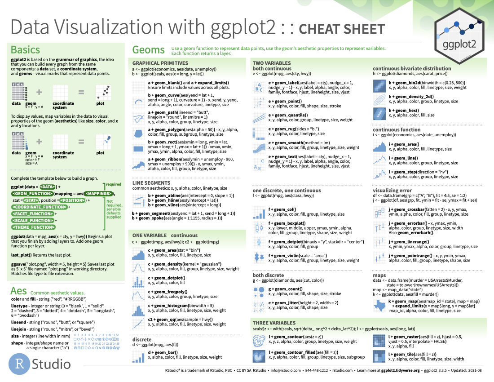

Download PDF
Translations (PDF)
ggplot2 is based on the grammar of graphics, the idea that you can build every graph from the same components: a data set, a coordinate system, and geoms—visual marks that represent data points.
To display values, map variables in the data to visual properties of the geom (aesthetics) like size, color, and x and y locations.
Complete the template below to build a graph.
ggplot(data = <Data>) +
<Geom_Function>(mapping = aes(<Mappings>),
stat = <Stat>,
position = <Position>) +
<Coordinate_Function> +
<Facet_Function> +
<Scale_Function> +
<Theme_Function>Data, a Geom Function, and Aes Mappings are required. Stat, Position, and the Coordinate, Facet, Scale, and Theme functions are not required and will supply sensible defaults.
ggplot(data = mpg, aes(x = cty, y = hwy)): Begins a plot that you finish by adding layers to. Add one geom function per layer.
last_plot(): Returns the last plot.
ggsave("plot.png", width = 5, height = 5): Saves last plot as 5’ x 5’ file named “plot.png” in working directory. Matches file type to file extension.
Common aesthetic values.
color and fill: String ("red", "#RRGGBB").
linetype: Integer or string (0 = "blank", 1 = "solid", 2 = "dashed", 3 = "dotted", 4 = "dotdash", 5 = "longdash", 6 = "twodash").
lineend: String ("round", "butt", or "square").
linejoin: String ("round", "mitre", or "bevel").
size: Integer (line width in mm).
shape: Integer/shape name or a single character ("a").
shape integer/name pairs: 0 = "square open", 1 = "circle open", 2 = "triangle open", 3 = "plus", 4 = "cross", 5 = "diamond open", 6 = "triangle down open", 7 = "square cross", 8 = "asterisk", 9 = "diamond plus", 10 = "circle plus", 11 = "star", 12 = "square plus", 13 = "circle cross", 14 = "square triangle", 15 = "square", 16 = "circle", 17 = "triangle", 18 = "diamond", 19 = "circle small", 20 = "bullet", 21 = "circle filled", 22 = "square filled", 23 = "diamond filled", 24 = "triangle filled", 25 = "triangle down filled"Use a geom function to represent data points, use the geom’s aesthetic properties to represent variables. Each function returns a layer.
a + geom_blank() and a + expand_limits(): Ensure limits include values across all plots.
b + geom_curve(aes(yend = lat + 1, xend = long + 1), curvature = 1): Draw a curved line from (x, y) to (xend, yend). aes() arguments: x, xend, y, yend, alpha, angle, color, curvature, linetype, size.
a + geom_path(lineend = "butt", linejoin = "round", linemitre = 1): Connect observations in the order they appear. aes() arguments: x, y, alpha, color, group, linetype, size.
a + geom_polygon(aes(alpha = 50)): Connect points into polygons. aes() arguments: x, y, alpha, color, fill, group, subgroup, linetype, size.
b + geom_rect(aes(xmin = long, ymin = lat, xmax = long + 1, ymax = lat + 1)): Draw a rectangle by connecting four corners (xmin, xmax, ymin, ymax). aes() arguments: xmax, xmin, ymax, ymin, alpha, color, fill, linetype, size.
a + geom_ribbon(aes(ymin = unemploy - 900, ymax = unemploy + 900): For each x, plot an interval from ymin to ymax. aes() arguments: x, ymax, ymin, alpha, color, fill, group, linetype, size.
Common aesthetics: x, y, alpha, color, linetype, size.
b + geom_abline(aes(intercept = 0, slope = 1)): Draw a diagonal reference line with a given slope and intercept.
b + geom_hline(aes(yintercept = lat)): Draw a horizontal reference line with a given yintercept.
b + geom_vline(aes(xintercept = long)): Draw a vertical reference line with a given xintercept.
b + geom_segment(aes(yend = lat + 1, xend = long + 1)): Draw a straight line from (x, y) to (xend, yend).
b + geom_spoke(aes(angle = 1:1155, radius = 1)): Draw line segments using polar coordinates (angle and radius).
c + geom_area(stat = "bin"): Draw an area plot. aes() arguments: x, y, alpha, color, fill, linetype, size.
c + geom_density(kernel = "gaussian"): Compute and draw kernel density estimates. aes() arguments: x, y, alpha, color, fill, group, linetype, size, weight.
c + geom_dotplot(): Draw a dot plot. aes() arguments: x, y, alpha, color, fill.
c + geom_freqpoly(): Draw a frequency polygon. aes() arguments: x, y, alpha, color, group, linetype, size.
c + geom_histogram(binwidth = 5): Draw a histogram. aes() arguments: x, y, alpha, color, fill, linetype, size, weight.
c2 + geom_qq(aes(sample = hwy)): Draw a quantile-quantile plot. aes() arguments: x, y, alpha, color, fill, linetype, size, weight.
d + geom_bar(): Draw a bar chart. aes() arguments: x, alpha, color, fill, linetype, size, weight.e + geom_label(aes(label = cty), nudge_x = 1, nudge_y = 1): Add text with a rectangle background. aes() arguments: - x, y, label, alpha, angle, color, family, fontface, hjust, lineheight, size, vjust.
e + geom_point(): Draw a scatter plot. aes() arguments: x, y, alpha, color, fill, shape, size, stroke.
e + geom_quantile(): Fit and draw quantile regression for the plot data. aes() arguments: x, y, alpha, color, group, linetype, size, weight.
e + geom_rug(sides = "bl"): Draw a rug plot. aes() arguments: x, y, alpha, color, linetype, size.
e + geom_smooth(method = lm): Plot smoothed conditional means. aes() arguments: x, y, alpha, color, fill, group, linetype, size, weight.
e + geom_text(aes(label = cty), nudge_x = 1, nudge_y = 1): Add text to a plot. aes() arguments: x, y, label, alpha, angle, color, family, fontface, hjust, lineheight, size, vjust.
f + geom_col(): Draw a bar plot. aes() arguments: x, y, alpha, color, fill, group, linetype, size.
f + geom_boxplot(): Draw a box plot. aes() arguments: x, y, lower, middle, upper, ymax, ymin, alpha, color, fill, group, linetype, shape, size, weight.
f + geom_dotplot(binaxis ="y", stackdir = "center"): Draw a dot plot. aes() arguments: x, y, alpha, color, fill, group.
f + geom_violin(scale = "area"): Draw a violin plot. aes() arguments: x, y, alpha, color, fill, group, linetype, size, weight.
g + geom_count(): Plot a count of points in an area to address over plotting. aes() arguments: x, y, alpha, color, fill, shape, size, stroke.
e + geom_jitter(height = 2, width = 2): Jitter points in a plot. aes() arguments: x, y, alpha, color, fill, shape, size.
h + geom_bin2d(binwidth = c(0.25, 500)): Draw a heatmap of 2D rectangular bin counts. aes() arguments: x, y, alpha, color, fill, linetype, size, weight.
h + geom_density_2d(): Plot contours from 2D kernel density estimation. aes() arguments: x, y, alpha, color, group, linetype, size.
h + geom_hex(): Draw a heatmap of 2D hexagonal bin counts. aes() arguments: x, y, alpha, color, fill, size.
i + geom_area(): Draw an area plot. aes() arguments: x, y, alpha, color, fill, linetype, size.
i + geom_line(): Connect data points, ordered by the x axis variable. aes() arguments: x, y, alpha, color, group, linetype, size.
i + geom_step(direction = "hv": Draw a stairstep plot. aes() arguments: x, y, alpha, color, group, linetype, size.
j + geom_crossbar(fatten = 2): Draw a crossbar. aes() arguments: x, y, ymax, ymin, alpha, color, fill, group, linetype, size.
j + geom_errorbar(): Draw an errorbar. Also geom_errorbarh(). aes() arguments: x, ymax, ymin, alpha, color, group, linetype, size, width.
j + geom_linerange(): Draw a line range. aes() arguments: x, ymin, ymax, alpha, color, group, linetype, size.
j + geom_pointrange(): Draw a point range. aes() arguments: x, y, ymin, ymax, alpha, color, fill, group, linetype, shape, size.
k + geom_map(aes(map_id = state), map = map) + expand_limits(x = map$long, y = map$lat): Draw polygons as a map. aes() arguments: map_id, alpha, color, fill, linetype, size.l + geom_contour(aes(z = z)): Draw 2D contour plot. aes() arguments: x, y, z, alpha, color, group, linetype, size, weight.
l + geom_contour_filled(aes(fill = z)): Draw 2D contour plot with the space between lines filled. aes() arguments: x, y, alpha, color, fill, group, linetype, size, subgroup.
l + geom_raster(aes(fill = z), hjust = 0.5, vjust = 0.5, interpolate = FALSE): Draw a raster plot. aes() arguments: x, y, alpha, fill.
l + geom_tile(aes(fill = z)): Draw a tile plot. aes() arguments: x, y, alpha, color, fill, linetype, size, width.
An alternative way to build a layer.
A stat builds new variables to plot (e.g., count, prop).
Visualize a stat by changing the default stat of a geom function, geom_bar(stat = "count"), or by using a stat function, stat_count(geom = "bar"), which calls a default geom to make a layer (equivalent to a geom function). Use ..name.. syntax to map stat variables to aesthetics.
In this example, "polygon" is the geom to use, stat_density_2d() is the stat function, aes() contains the geom mappings, and ..level.. is the variable created by stat.
c + stat_bin(binwidth = 1, boundary = 10): x, y | ..count.., ..ncount.., ..density.., ..ndensity..
c + stat_count(width = 1): x, y | ..count.., ..density..
c + stat_density(adjust = 1, kernel = "gaussian"): x, y | ..count.., ..density.., ..scaled..
e + stat_bin_2d(bins = 30, drop = T): x, y, fill | ..count.., ..density..
e + stat_bin_hex(bins =30): x, y, fill | ..count.., ..density..
e + stat_density_2d(contour = TRUE, n = 100): x, y, color, size | ..level..
e + stat_ellipse(level = 0.95, segments = 51, type = "t")
l + stat_contour(aes(z = z)): x, y, z, order | ..level..
l + stat_summary_hex(aes(z = z), bins = 30, fun = max): x, y, z, fill | ..value..
l + stat_summary_2d(aes(z = z), bins = 30, fun = mean): x, y, z, fill | ..value..
f + stat_boxplot(coef = 1.5): x, y | ..lower.., ..middle.., ..upper.., ..width.., ..ymin.., ..ymax..
f + stat_ydensity(kernel = "gaussian", scale = "area"): x, y | ..density.., ..scaled.., ..count.., ..n.., ..violinwidth.., ..width..
e + stat_ecdf(n = 40): x, y | ..x.., ..y..
e + stat_quantile(quantiles = c(0.1, 0.9), formula = y ~ log(x), method = "rq"): x, y | ..quantile..
e + stat_smooth(method = "lm", formula = y ~ x, se = T, level = 0.95): x, y | ..se.., ..x.., ..y.., ..ymin.., ..ymax..
ggplot() + xlim(-5, 5) + stat_function(fun = dnorm, n = 20, geom = "point"): x | ..x.., ..y..
ggplot() + stat_qq(aes(sample = 1:100)): x, y, sample | ..sample.., ..theoretical..
e + stat_sum(): x, y, size | ..n.., ..prop..
e + stat_summary(fun.data = "mean_cl_boot")
h + stat_summary_bin(fun = "mean", geom = "bar")
e + stat_identity()
e + stat_unique()
Override defaults with scales package.
Scales map data values to the visual values of an aesthetic. To change a mapping, add a new scale.
In this example, scale_ specifies a scale function, fill is the aesthetic to adjust, and manual is the prepackaged scale to use.
values contains scale-specific arguments, limits specifies the range of values to include in mappings, breaks specifies the breaks to use in legend/axis, and name and labels specify the title and labels to use in the legend/axis.
Use with most aesthetics.
scale_*_continuous(): Map continuous values to visual ones.
scale_*_discrete(): Map discrete values to visual ones.
scale_*_binned(): Map continuous values to discrete bins.
scale_*_identity(): Use data values as visual ones.
scale_*_manual(values = c()): Map discrete values to manually chosen visual ones.
scale_*_date(date_labels = "%m/%d", date_breaks = "2 weeks"): Treat data values as dates.
scale_*_datetime(): Treat data values as date times. Same as scale_*_date(). See ?strptime for label formats.
Use with x or y aesthetics (x shown here).
scale_x_log10(): Plot x on log10 scale.
scale_x_reverse(): Reverse the direction of the x axis.
scale_x_sqrt(): Plot x on square root scale.
n + scale_fill_brewer(palette = "Blues"): Use color scales from ColorBrewer. For palette choices RColorBrewer::display.brewer.all().
n + scale_fill_grey(start = 0.2, end = 0.8, na.value = "red"): Use a grey gradient color scale.
o + scale_fill_distiller(palette = "Blues"): Interpolate a palette into a continuous scale.
o + scale_fill_gradient(low = "red", high = "yellow"): Create a two color gradient.
o + scale_fill_gradient2(low = "red", high = "blue", mid = "white", midpoint = 25): Create a diverging color gradient.
o + scale_fill_gradientn(colors = topo.colors(6)): Create a n-color gradient. Also rainbow(), heat.colors(), terrain.colors(), cm.colors(), RColorBrewer::brewer.pal().
p + scale_shape() + scale_size(): Map discrete values to shape and size aesthetics.
p + scale_shape_manual(values = c(3:7)): Map discrete values to specified shape values.
p + scale_radius(range = c(1,6)): Map values to a shape’s radius.
p + scale_size_area(max_size = 6): Like scale_size() but maps zero values to zero size.
Shapes used here are the same as the ones listed in the Aes section.
u + coord_cartesian(xlim = c(0, 5)): xlim, ylim. The default Cartesian coordinate system.
u + coord_fixed(ratio = 1/2): ratio, xlim, ylim. Cartesian coordinates with fixed aspect ration between x and y units.
ggplot(mpg, aes(y = fl)) + geom_bar(): Flip Cartesian coordinates by switching x and y aesthetic mappings.
u + coord_polar(theta = "x", direction = 1): theta, start, direction. Polar coordinates.
u + coord_trans(y = "sqrt"): x, y, xlim, ylim. Transformed Cartesian coordinates. Set xtrans and ytrans to the name of a window function.
π + coord_quickmap(); π + coord_map(projection = "ortho", orientation = c(41, -74, 0)): projection, xlim, ylim. Map projections from the mapproj packages (mercator (default), azequalarea, lagrange, etc.).
Position adjustments determine how to arrange geoms that would otherwise occupy the same space.
s + geom_bar(position = "dodge"): Arrange elements side by side.
s + geom_bar(position = "fill"): Stack elements on top of one another, normalize height.
e + geom_point(position = "jitter"): Add random noise to X and Y position of each element to avoid over plotting.
e + geom_label(position = "nudge"): Nudge labels away from points.
s + geom_bar(position = "stack"): Stack elements on top of one another.
Each position adjustment can be recast as a function with manual width and height arguments:
u + theme_bw(): White background with grid lines.
u + theme_gray(): Grey background with white grid lines (default theme).
u + theme_dark(): Dark grey background and grid lines for contrast.
u + theme_classic(): No grid lines.
u + theme_light(): Light grey axes and grid lines.
u + theme_linedraw(): Uses only black lines.
u + theme_minimal(): Minimal theme.
u + theme_void(): Empty theme.
u + theme(): Customize aspects of the theme such as axis, legend, panel, and facet properties.
Facets divide a plot into subplots based on the values of one or more discrete variables.
t + facet_grid(cols = vars(fl)): Facet into a column based on fl.
t + facet_grid(rows = vars(year)): Facet into rows based on year.
t + facet_grid(rows = vars(year), cols = vars(fl)): Facet into both rows and columns.
t_facet_wrap(vars(fl)): Wrap facets into a rectangular layout.
t + facet_grid(rows = vars(drv), cols = vars(fl), scales = "free"): Set scales to let axis limits vary across facets. Also "free_x" for x axis limits adjust to individual facets and "free_y" for y axis limits adjust to individual facets.
Set labeller to adjust facet label:
t + facet_grid(cols = vars(fl), labeller = label_both): Labels each facet as “fl: c”, “fl: d”, etc.
t + facet_grid(rows = vars(fl), labeller = label_bquote(alpha ^ .(fl))): Labels each facet as “𝛼c”, “𝛼d”, etc.
Use labs() to label elements of your plot.
t + labs(x = "New x axis label",
y = "New y axis label",
title ="Add a title above the plot",
subtitle = "Add a subtitle below title",
caption = "Add a caption below plot",
alt = "Add alt text to the plot",
<Aes> = "New <Aes> legend title")t + annotate(geom = "text", x = 8, y = 9, label = "A"): Places a geom with manually selected aesthetics.
p + guides(x = guide_axis(n.dodge = 2)): Avoid crowded or overlapping labels with guide_axis(n.dodge or angle).
n + guides(fill = "none"): Set legend type for each aesthetic: colorbar, legend, or none (no legend).
n + theme(legend.position = "bottom"): Place legend at “bottom”, “top”, “left”, or “right”.
n + scale_fill_discrete(name = "Title", labels = c("A", "B", "C", "D", "E")): Set legend title and labels with a scale function.
t + coord_cartesian(xlim = c(0, 100), ylim = c(10,20)): Zoom without clipping (preferred).
t + xlim(0, 100) + ylim(10, 20) or t + scale_x_continuous(limits = c(0, 100)) + scale_y_continuous(limits = c(0, 100)): Zoom with clipping (removes unseen data points).